Publications
-
See Google Scholar for a full list of papers. *: equivalent contribution, †: corresponding author
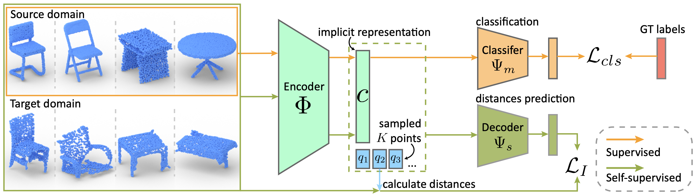 |
Domain Adaptation on Point Clouds via Geometry-Aware Implicits |
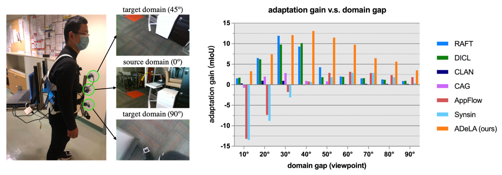 |
ADeLA: Automatic Dense Labeling with Attention for Viewpoint Adaptation in Semantic Segmentation |
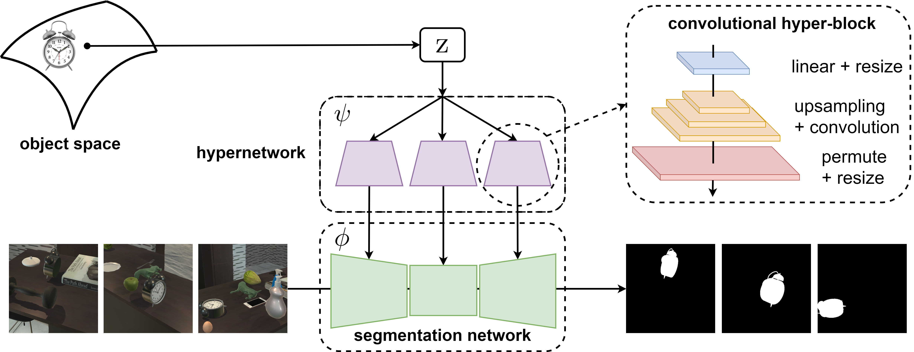 |
Object Pursuit: Building a Space of Objects via Discriminative Weight Generation |
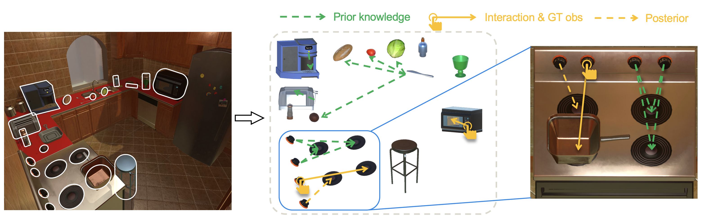 |
IFR-Explore: Learning Inter-object Functional Relationships in 3D Indoor Scenes |
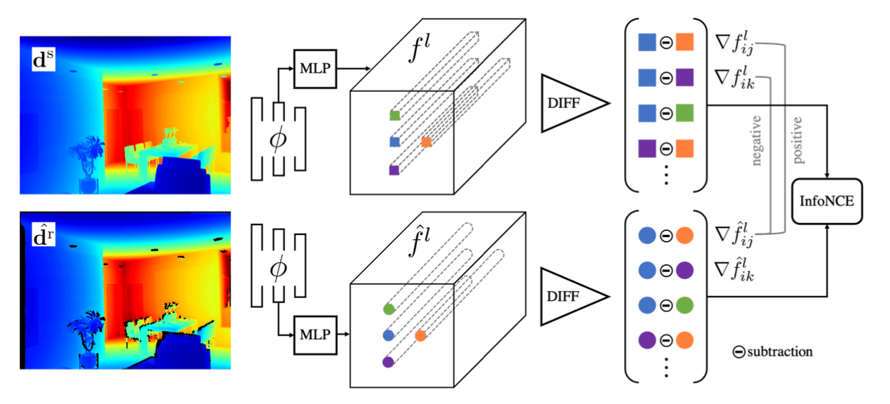 |
DCL: Differential Contrastive Learning for Geometry-Aware Depth Synthesis |
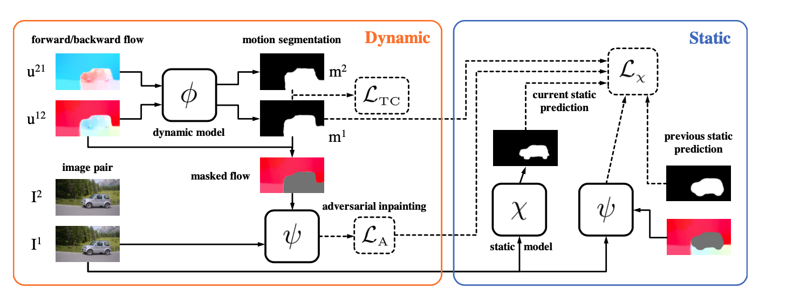 |
DyStaB: Unsupervised Object Segmentation via Dynamic-Static Bootstrapping |
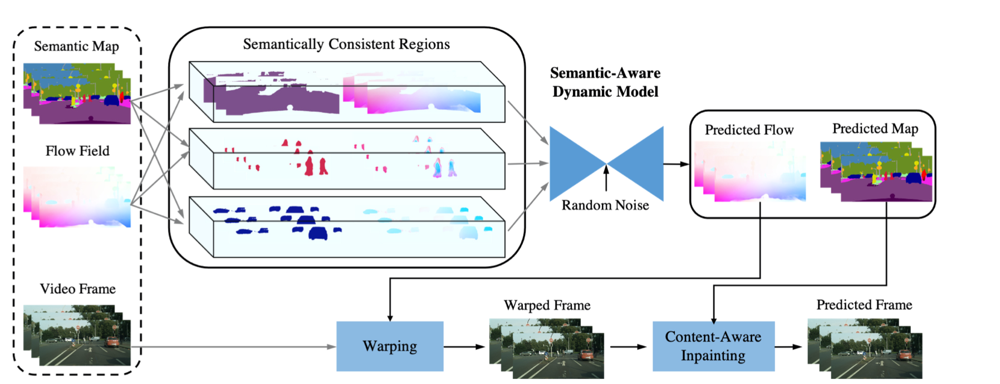 |
Learning Semantic-Aware Dynamics for Video Prediction |
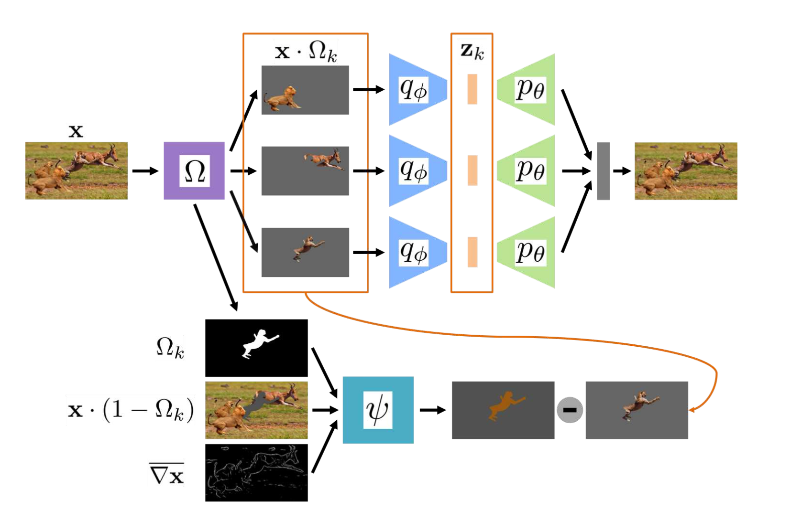 |
Learning to Manipulate Individual Objects in an Image |
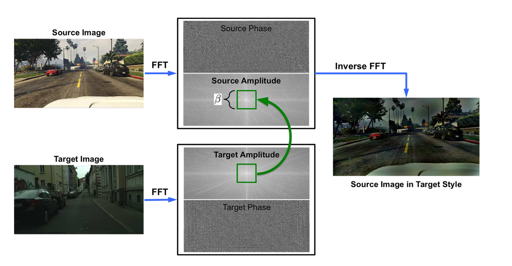 |
FDA: Fourier Domain Adaptation for Semantic Segmentation |
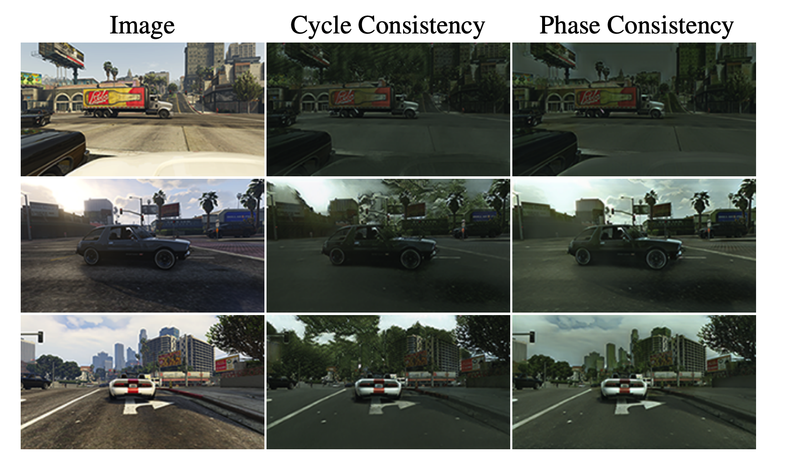 |
Phase Consistent Ecological Domain Adaptation |
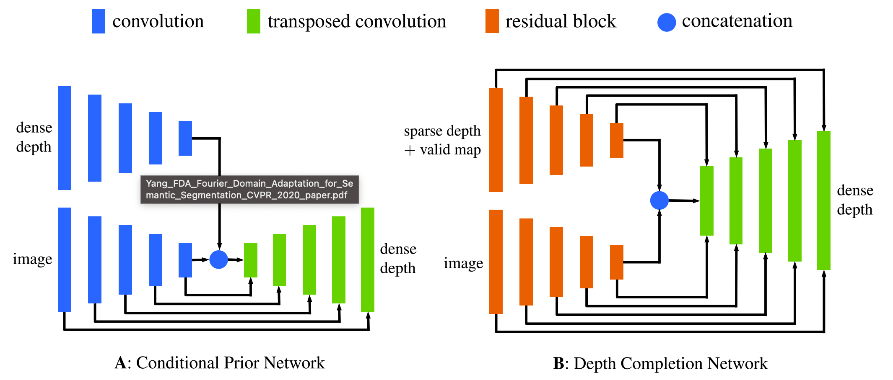 |
Dense Depth Posterior (DDP) from Single Image and Sparse Range |
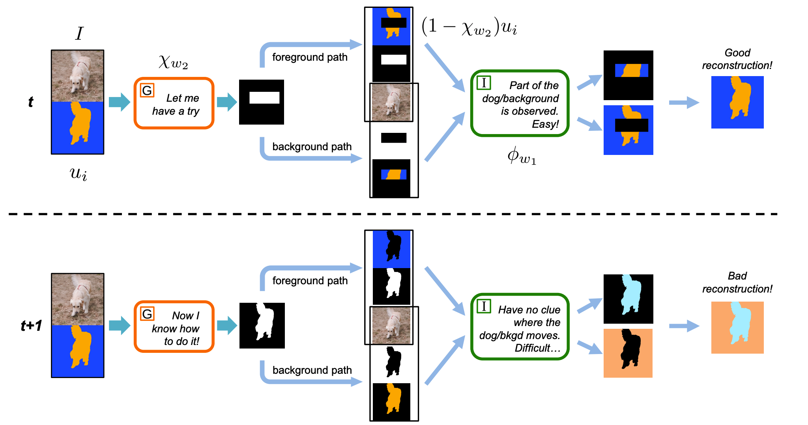 |
Unsupervised Moving Object Detection via Contextual Information Separation |
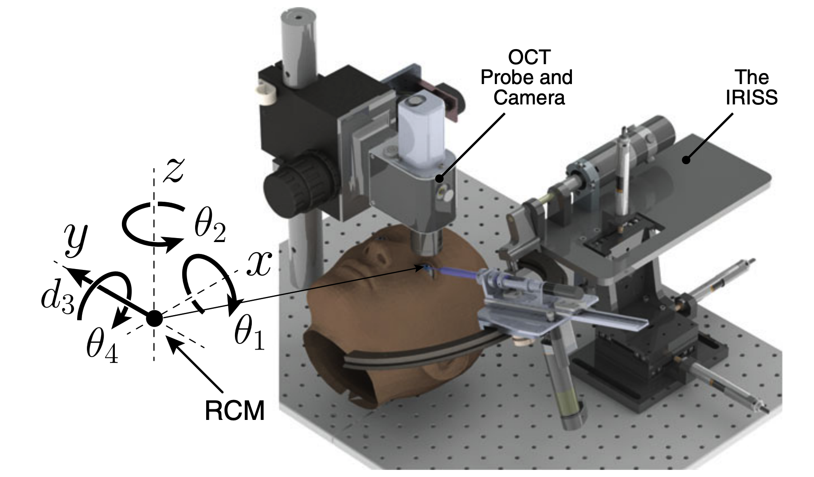 |
Intraocular robotic interventional surgical system (IRISS): semi-automated OCT-guided cataract removal |
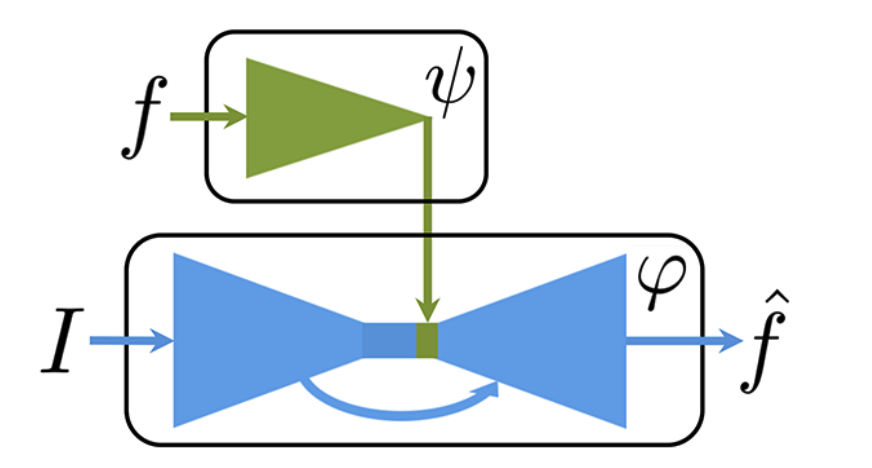 |
Conditional Prior Networks for Optical Flow |
Education
- 2014.9 - 2019.4: Ph.D. in Computer Science, University of California, Los Angeles (UCLA)
- 2011.9 - 2014.6: M.S. in Electrical Engineering, King Abdullah University of Science and Technology (KAUST)
- 2007.9 - 2011.7: B.E. in Electronic Information Engineering, University of Science and Technology of China (USTC)
Professional Service
- Program committee/reviewer:
- Conferences: CVPR, ICCV, ECCV, ICML, ICLR, IJCAI, AAAI, NeurIPS
- Journals: TPAMI, TIP, IJCV, RAL